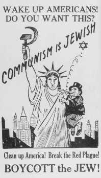
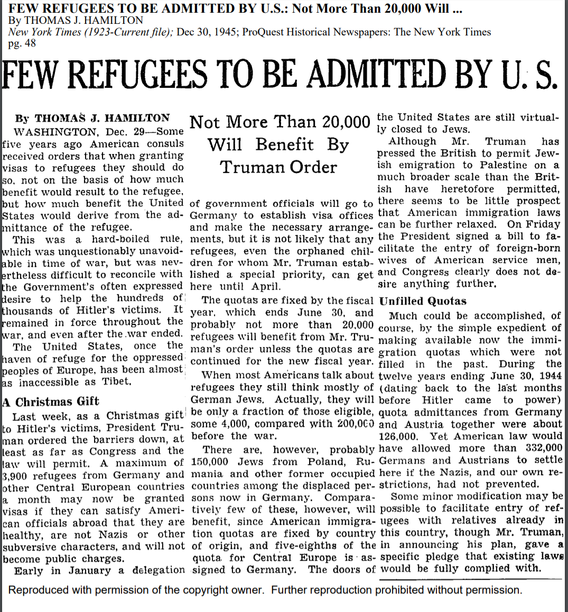
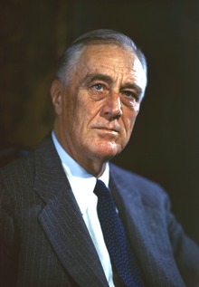

“The weak always cry for justice and morality, while the powerful call for order.” These “strong” people often opt to be apathetic to the plights of the “weak” in favor of the norm. As per this concept, during the Holocaust, the United States treated the Jews with utter disinterest. Only after immense pressure does the country, both at a journalistic and political level, properly acknowledge the struggles of the Jewish people. Following the American public’s awareness of the Holocaust, The New York Times and the American Government became more sympathetic towards Jews, compensating for their anti-Semitism behavior and disregard for Jews before the war.
Before knowledge of the Holocaust was widespread in America, anti-Semitism was not only rampant, but openly presented without much question. For example, this can be seen through a political poster equating communism with the Jewish people, as a reason to reject Jewish immigrants coming to America. The poster also plays on traditional Jewish stereotypes to push its message, such as a long-nosed and curly-haired Statue of Liberty carrying a scheming goblin intended to be a Jew. The fact that such a transparently offensive viewpoint could be publicly presented without question and accepted as a valid basis for a political belief speaks to a greater culture of allowing anti-Semitism in America.
These anti-Semitic beliefs were commonplace in America, possibly going so far as to influence policy of the time. For example, before Nazi Germany initiated the Final Solution, they tried to send away their Jews to various other countries, like America. For example, the St. Louis was a boat of Jewish refugees fleeing the impending Holocaust, but were rejected due to intervention from the American Government. Additionally, a boat comprised of solely Jewish children was turned away at America’s doorstep, while a boat containing only British children was allowed to immigrate. Biased immigration decisions made by the United States forced Jewish refugees to return to a more desperate Germany. By caving into anti-Semitic pressures, the American Government showed that they were subject to the same fears and prejudices that plagued so many Americans of the time. The decisions to reject these refugees were indicative of a widespread problem that had firmly entrenched itself throughout the Federal Government.
Beyond the Government’s anti-Semitism, various media organizations also exemplified this problematic culture. The New York Times, as the most influential American media outlet of the time, serves as a case study of this phenomenon. The Times did represent Jewish people throughout their publication, however they usually limited Jewish news and problems to articles regarding foreign affairs. In doing so they presented Jews as a non-American people, isolating and disregarding Jews already in America, as well as making the overseas persecution of Jews easier to accept as undesirable foreigners. To the Times, Jews were a European problem, rather than an American one, and their representation showed this. By distancing Jewish strife from America, any sense of accountability or responsibility from not only the Government but also the people was lost. When Jewish refugees came to America for help, it was this mindset pushed by institutions like the Times that caused them to be turned away. Anti-Semitic factors like this are what caused 72% of the population to not want Jewish immigrants, despite widespread knowledge of Nazi persecution: America first.
Additionally, even after the first bits of knowledge of the Holocaust were made known to the Times, the newspaper still failed to properly report on these issues. In analyzing 24,000 front-page stories during the war, historian Laurel Leff found that only forty-four mentioned Jewish people, of which half are related to the Holocaust. The weak, impersonal, or non-existent coverage of Nazi atrocities failed to properly inform the American public of the Holocaust. The New York Times had a journalistic obligation to report the whole truth properly and without bias. However, by failing to achieve these obligations, they committed a harsh disservice to the American people and delayed widespread knowledge about the extent and gravity of the Holocaust.
After the war was over, newfound sympathy for the Jewish people spread across America. Institutions such as the New York Times, who previously disregarded and improperly covered Jewish stories, departed from their previous practices and started providing frequent coverage of Jewish issues both in and out of America. This is indicative of the pro-Jewish trend the newspaper entered during this time, as opposed to the belittling attitude before. Since The New York Times failed to fully and accurately report on the Holocaust, it was not a rise in awareness of Nazi atrocities within the Times that triggered this trend. Rather it was the support by the general populace. When the American people held actively and openly anti-Semitic views of Jews, as 54% did in 1939, the Times reflected this by giving Jews poor coverage. But only when sympathy grew for Jewish people and Americans eased up on their anti-Semitic tendencies, both during and after the Holocaust, The New York Times compelled themselves to properly cover these Jewish stories. The Times was less interested in objective reporting, instead opting to adapt to the implicit biases of the public and pander to the majority.
The shift of the New York Times’ coverage of Jews shows how Jewish people went from being viewed as an inferior part of American society that could be dismissed with ease, to a people for whom Americans felt deep sympathy and shame for their earlier apathy. This is especially evident in post-war articles such as, “Jews in U.S. Camps Held Ill-Treated,” which not only details the terrible conditions Jews were facing in displaced persons camps, but also places America directly at fault for this specific mistreatment. In doing so, Jewish issues and needs were being put above America’s fragile perception. In addition the article goes beyond simply reporting on the events and calls for the correction of these injustices, as the failure to accurately administer these camps was a sign of “incompetent and disinterested” military personnel. This is a different perspective on Jewish issues, considering how the Times failed to call for action regarding both Jewish refugees or even the Nazi Holocaust.
This shift can also be seen in other articles such as, “Few Refugees to be Admitted by U.S.”. Once again, this article went beyond just detailing the facts and statistics of immigration quotas, it framed the issue as a failure of American foreign policy that must be immediately amended to allow more oppressed peoples, specifically Jews, into the United States. Additionally, the article makes a point to call out the shoddy pre-war Immigration policy, putting the statistics of postwar 4,000 German Jewish refugees in conversion with the 200,000 pre-war refugees. This makes the reader question why the United States failed to admit such an obviously oppressed people, and holds the U.S. accountable for their failure to help a marginalized people. This openly critical portrayal of the United States is representative of a vastly different New York Times than the pre-Holocaust one, particularly when dealing with a people as controversial as the Jews. As if in an attempt to compensate for their earlier Jewish disregard, this newly enlightened coverage serves as a statement of apology to the people they had failed.
Similar to The New York Times, The Federal Government grew more sympathetic towards the Jewish people, however this was a gradual process. The Government initially prolonged the news of Hitler’s “Final Solution”, keeping word of it locked up in the bureaucratic processes of the State Department for three months before releasing it to the public. This was a desperate attempt to keep word of Nazi atrocities away from the public, as there would be unprecedented sympathy for the Jews. This would not bode well for anti-Semitic policies, in particular U.S. immigration laws and quotas, that President Roosevelt enabled. In fact, Roosevelt continually promised the Allies “shall win the war”, but even after meetings with Jewish advocates and activists he never mentioned goals of rescuing Jews. Despite the pressure of a Congress advocating to support Jews, Roosevelt stood firmly indifferent towards their desperate plight, thus letting his secretly bigoted self leak into his responsibilities. He refused to make any arrangements or promises to support the victims of the Holocaust; an “unentangled” America.
The U.S. Government of the late 30’s and early 40’s, just like America as a whole, was plagued with anti-Semitism. While this anti-Semitism was not as overt or abominable as the defining policies of Nazi Germany, it was still evidently present. These decisions to prolong awareness of the Holocaust, or refusals to even attempt to make plans to rescue those in concentration camps contribute to an American Governmental truth in this time: selfishness and lethargy. This “self” is both in reference to physical America in terms of the global stage, as well as the in group of Americans, those who either were or could become Americans. The failure to support non-American Jews both in terms of refugees and Holocaust victims speaks to the global selfishness, while the failure to hear the voices of the American Jews advocating for their kin across the sea contributes to this domestic selfishness. As Jews were not yet a part of the in, even when faced with these crimes against humanity the U.S. Government stuck to its apathetic manner as long as it could, as if this lethargical response towards “un-American” peoples was a way to retain the isolationism present prior to Pearl Harbor.
However, the Government’s begrudging acquiescence of the Holocaust lasted until Roosevelt was confronted with a report plainly stating the intentional information delays and obfuscations, the State Department had for the atrocities. The President and his Government could no longer hide behind their trickery and dance the line between xenophobia and compassion. Obligated sincerity had been imposed on the U.S. Government. In January 1944 Roosevelt created the War Refugee Board, which successfully rescued and provided aid for those oppressed by Nazi Germany. While the WRB does not excuse the previous inactions of Roosevelt, it does signal the start of a change in how the U.S. Government perceived and advocated for the Jewish people. In fact, they were just that: treated like people. Through the WRB, Jews were given the respect America had previously failed to present them with.
As the war in Europe came to a close, the question of what to do with Jews displaced by the Holocaust was a pressing issue among world leaders, but to Jews the answer was simple. Over 99% of Jews polled in one displaced persons camp sought to return to Israel; to facilitate the creation of a Jewish state. Despite Roosevelt’s promise to Arab leaders that America would not intervene in Palestinian affairs, his successor, President Truman, established a cabinet committee devoted solely to the Palestinian issue. Soon, Truman was supporting the admittance of 100,000 displaced Jews into Palestine, and shortly after he, along with Great Britain, publicly announced support for a Jewish state. Truman undermining the firm promise laid out by his predecessor is indicative of the changing governmental perception of the Jewish people. It is foolish to think the support for a Jewish state from Britain and America was independent of both the sympathy and sense of urgency gained from the Holocaust, especially considering the stark opposition to a Jewish state both nations had before the Holocaust. Without sympathies forged by the Holocaust, it would have been uncharacteristic of the United States to create a distant state for this foreign people.
Just like the New York Times, this eventual sympathy, while created in part by the horrors of the Holocaust, was also created to compensate for the earlier anti-semitic policies in place by the government. This appears to be an apology on the surface, but an obfuscation of the whole truth, as the United States’ help with the creation of Israel makes a much more convenient history book lesson than the anti-Semitic inaction and immigration policies of America around World War II.
This is precisely the common misconception about America during this time; that America did not play any part in the Holocaust. This perspective can be seen in Richard Minear’s piece Atomic Holocaust, where he summarizes one of his critical pieces of evidence as, “—concludes that the U.S. Holocaust Museum is out of place on the Mall, that it belongs in Berlin or at the site of one of the camps.” Minear then goes on to state that the Holocaust Memorial Museum being in America is due to the United States’ need to “Americanize” events, implying that America was not complicit in the Holocaust. America’s knowledgeable passivity during the Holocaust lead to thousands of lives lost. Has America’s role in rejecting desperate refugees based purely because of their genetic background been forgotten? Or what about the three month delay to tell the American people about the Nazi’s plan for genocide? Is it better to just whitewash history then? Should American textbooks only present the New Deal President Roosevelt, rather than the apathetic towards Jewish strife President Roosevelt?
To clarify: this is not a comparison of Hitler’s atrocities with American apathy during the Holocaust. However, even though Nazi Germany was so unfathomably immoral during World War II, this does not make America’s atrocities any better. America’s actions and policies are still crimes of bigotry, selfishness, and apathy, and as such should be remembered and atoned for. As these misdeeds are not remembered and omitted from history textbooks it is as if they did not happen. America needs to be held accountable for all of its atrocities. Additionally, this is not to say these are the only things that should be taught, or even the only omitted facts. These are nuanced times, concepts, and people. Just as it is inaccurate to portray Roosevelt as nearly flawless, it would be just as much of a travesty to write of him as a pure anti-Semitic bigot. When these atrocities are not taught misinformation breeds and becomes the new truth. America has committed these vile acts, but the forces of history have been more than favorable to America’s image; America is not held accountable for its crimes.
The modern implications of these events are endless: an “America first” mentality is one present in both times in literal name as well as xenophobic sentiment; media outlets failing to live up to their journalistic obligations to tell the entire truth in unbiased fashion; governments intentionally obscuring the truth; the origin of the United States’ unequivocal support for Israel; and the beginning of Jewish people’s assimilation into the in. This list would never end. Especially in discussing the controversial topic that is the Holocaust, a genocide that's very existence can come into question, the entire picture needs to be flatly presented. The Holocaust is a complex story that will serve as a cautionary tale for future generations, warning them of the dangers of hatred and fear. But if it is not told in its entirety, time and time again, then more of the story will be forgotten until there’s a newer cautionary tale to take its place.
Primary Sources:
Anti-Semitic poster equating Jews with communism. 1939. Illustration. Accessed
May 17, 2018. https://www.ushmm.org/wlc/en/
media_ph.php?ModuleId=10005182&MediaId=1039.
Cortesi, Arnaldo. "Peron's Henchmen Assault Jews;Argentine Police Arrest
Victims." New York Times (New York, NY), November 25, 1945.
Hamilton, Thomas J. "Few Refugees to Be Admitted by U.S." New York Times (New
York, NY), December 30, 1945.
New York Times (New York, NY). "Jews in U.S. Camps Held Ill-Treated:Military
Government Men in Germany Are 'Incompetent,' Chaplain Declares." November
22, 1945.
New York Times (New York, NY). "'No Jews Wanted' Sign Appears in Trieste
Cafe." December 26, 1938.
The New York Times (New York City, NY). "Won't Direct at La Scala: Kleiber
Refuses Because of Milan Opera Ban on Jews." December 30, 1938, 10.
New York Times (New York City, NY). "Plan Aid To Jews In Chile: New Society Will
Promote Free Entry Into Latin America." December 24, 1938.
Secondary Sources:
Buhrman, William D. "Book Review: Buried by the Times: The Holocaust and
America's Most Important Newspaper." International Journal of Public
Theology 3 (2009): 396-97. PDF.
Feingold, Henry L. Bearing Witness: How America and Its Jews Responded to the
Holocaust. Syracuse, NY: Syracuse University Press, 1995.
Greene, Daniel, and Frank Newport. "American Public Opinion and the Holocaust."
Gallup. Last modified April 23, 2018. Accessed May 24, 2018.
http://news.gallup.com/opinion/polling-matters/232949/
american-public-opinion-holocaust.aspx.
Jonathan D. Sarna and Jonathan Golden. "The American Jewish Experience in the
Twentieth Century: Antisemitism and Assimilation," National Humanities Center, last modified October 2000. accessed May 17, 2018. http://nationalhumanitiescenter.org/tserve/twenty/tkeyinfo/jewishexp.htm.
Minear, Richard H. "Atomic Holocaust, Nazi Holocaust." Diplomatic History 19,
no. 2 (Spring 1995): 347-65. PDF.
Oldham, G. Ashton. "Jewish Immigration Urged: Bishop Oldham Would Have Us Act
More and Talk Less." New York Times (New York, NY), November 19, 1945.
Ostrow, Martin, dir. America and the Holocaust: Deceit and Indifference. PBS,
1998. Accessed May 17, 2018. https://www.youtube.com/
watch?v=cbNAEQR3rao&feature=youtu.be.
United States Department of State. "Creation of Israel, 1948." Office of the
Historian. Accessed May 17, 2018. https://history.state.gov/milestones/
1945-1952/creation-israel.
United States Holocaust Memorial Museum. "The United States and the Holocaust,
1942-45." Holocaust Encyclopedia. Accessed May 24, 2018.
https://www.ushmm.org/wlc/en/article.php?ModuleId=10007094.
United States Holocaust Memorial Museum. "Voyage of the St. Louis." Holocaust Encyclopedia.
Accessed May 17, 2018. https://www.ushmm.org/wlc/en/ article.php?ModuleId=10005267.